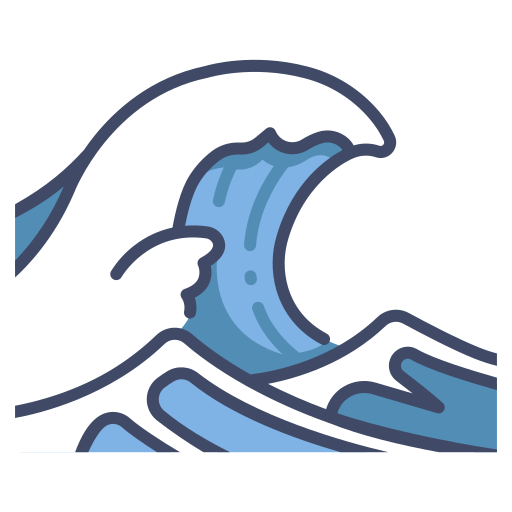

A sétima ODS
A ONU criou 17 objetivos para o desenvolvimento sustentavel
dentre eles,o seu sétimo, que propõe o aumento da distribuição e
criação de usinas com foco em energia sustentavel, ela tambêm conta
com 5 metas para serem concluidas até o ano de 2023, essa iniciativa teve
inicio em 2015 e visam guiar a humanidade até o ano de 2030.
O que é a energia limpa?
A energia limpa é toda a eletricidade gerada através de
fontes renováveis e que,não emitem gases poluêntes ou geram
impactos ao meio ambiente.
Os tipos de energia sustentavel
Existem 6 tipos de energia sustentavel mais utilizados:

Energia Solar
Energia Eólica

Energia Maremotriz
Energia Biomassa
Energia Hídrica